이 글은 2022년 한국형 아이코어 사업(I-Corps)에 참가한 경험을 정리한 것이다. 창업을 고민하는 대학원생에게 맛보기로 배울 수 있는 좋은 프로그램이라고 생각하지만, 구체적인 후기 등이 없어서 지원할 당시 아쉬웠다. 사업 과정 중 알았으면 좋았을 것 등을 위주로 적었고 이후 사업 참가자에게 도움이 되면 좋겠다.
한국형 아이코어란?
한국형 아이코어 사업은 Lab-to-Market다. 말 그대로, 연구실 기술 기반의 기초·원천 결과물이 학문적인 연구 성과에서 그치지 않고 시장에서 활용 될 수 있는지를 빠르게 검증하는 것이 본 사업 목적이다. 2015년부터 과학기술정보통신부 창업교육사업으로서 매년 진행되어 왔으며, 전반적인 사업에 대한 개요와 구성은 여기를 참고하면 된다.
무엇을 얻어갈 수 있는가?
이 사업에서 얻어간 점을 먼저 적으려고 한다. 나와 팀원, 다른 팀도 느낀 이런 경험을 하고자 한다면 이 사업을 적극 추천한다.
1. 고객 중심 마인드
내가 가진 기술을 어떤 고객이, 왜 원하는 지를 고민하며 고객 중심 마인드를 배운다. 대학원에서는 주로 개발자 중심 마인드, 이 기술이 실현가능한 지(feasibility)에 시간을 많이 썼던 것 같다. 창업에선 그것보다도 더 중요한 내 기술을 원하는 고객은 누구고, 그 이유에 대해 고민하는 데(desirability)에 시간을 써야 한다고 한다. 이 프로그램에선 고객 중심 마인드를 고객 인터뷰 등으로 체계적으로 배울 수 있었다.
2.
창업가를
3. 오픈 마인드
지원 및 선정
신청서 작성
3월, 사업시행공고가 담긴 홍보 메일 보고 사업을 처음 알게 됐다. 연구실에서 개발하고 사용하던 기술이 있던 중, 논문이나 학회 발표, 특허가 아닌 더 실용적인 일을 하고 싶어 지원하게 됐다.
당초 구상한 아이템은 스마트기술(센싱과 텍스트마이닝 기술)로 공공공간 가치를 측정하는 것이었다. 돌아보면 학술 연구와 크게 다를게 없어 보이는데, 신청서 작성 당시에는 시간이 부족해 다른 아이디어를 구체화하기 어려웠다.
“우선 내고 나중에 바꾸자”라는 생각은 위험하다. 우리가 그랬는데, 아이템을 바꾸는 피벗(pivot)은 기초교육이 끝난 프로그램 중간부터 가능했다. 신청서 아이디어로 국내 교육과 인터뷰 등을 모두 수행해야 한다는 점을 고려한다면, 처음부터 아이템 선정에 신중해야 할 것이다.
아이템의 개념도를 만들면 여러모로 유용하다. 신청서 아이템 설명을 적을 때는 물론 여러 아이템을 발표할 기회에서도 자주 쓰인다. 우리가 만든 개념도는 다음과 같다.
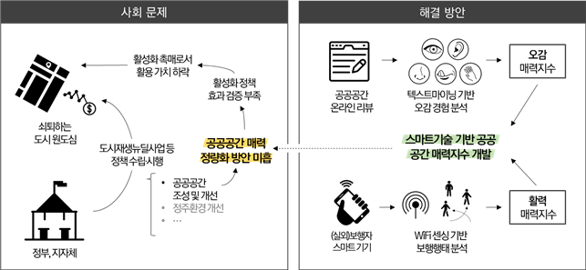
발표 평가
4월, 서류 합격 메일을 받고 발표 평가를 했다.
평가 전, 발표자료(15p 이내 PDF)와 발표영상(7분 내외 zoom 녹화본)을 만들어 보냈다. 발표 당일에는 정해진 시간에 zoom 회의장에 입장해 사전에 보낸 7분 발표영상을 4~5명 심사위원과 같이 봤다.
발표 영상 시청 후, 7분 질의응답 시간을 가졌다. 주로 제시한 기술의 설명과 한계점에 대해 물어보았는데, 어떤 부분이 독창적인지, 제시한 특허와 어떻게 관련되었는 지를 대답했다. 해외교육전형이기에 아이템이 미국에서 가능한 지나, 영어로 아이템을 설명해보라는 질문도 받았다.
발표 후, 일주일 내로 최종 선정 메일을 받았다. 아이템에 도움 되는 참고 의견도 같이 보내준다.
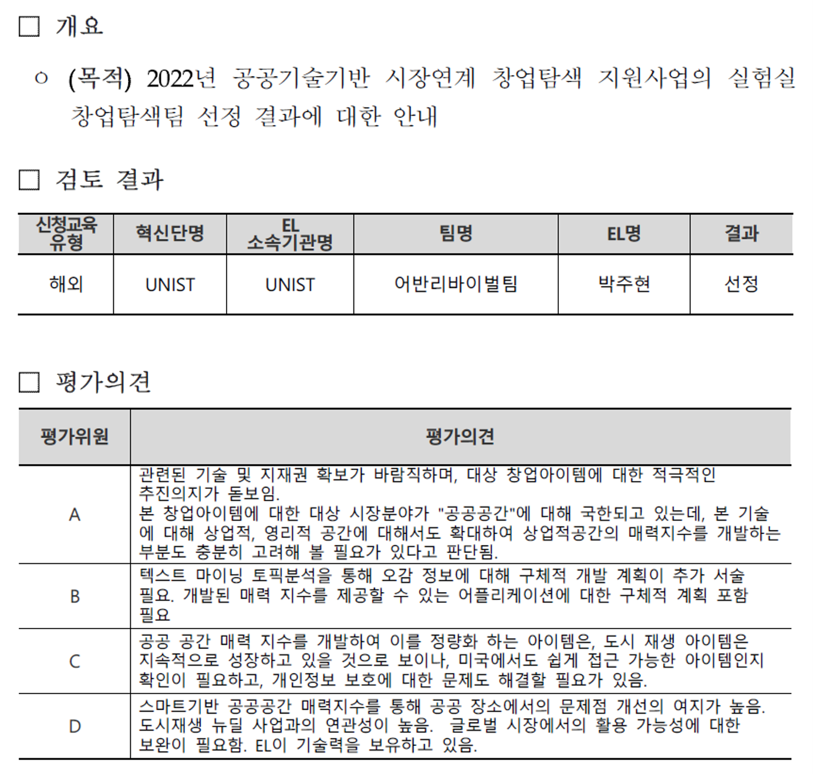
기초 창업교육
창업에 필요한 기초 지식을 배우는 시간을 가진다. 이 교육은 사업 OT 격의 부트캠프와 3일간 합숙교육, 기초교육으로 구성된다.
부트캠프
6월 8일, 선정된 탐색팀이 처음으로 모여 아이코어 프로그램에 대한 소개를 듣고 탐색팀 간 네트워크를 하는 OT 시간을 가졌다.
1부는 전반적인 사업 소개와 혁신단별 인스트럭터 등 사업 관계자 인사, 그리고 이전 기수의 사례 발표가 진행된다. 2부는 각 혁신단별로 모여서 1분 내외로 자신의 아이템을 설명하고 만들어준 명함을 돌리며 서로 알아가는 시간을 가진다.

기초교육
본격적인 창업 활동인 실전교육에 앞서, 필요한 창업 지식을 배운다. 제출한 아이템으로 비즈니스모델을 만들어보고 이를 검증하는 고객탐색방법론을 주로 배우며, 2박 3일간 합숙 교육과 온라인 중간점검, 최종 발표로 구성된다. 공식 일정은 여기를 참고하면 된다.
{kind=link}
합숙교육 1일차
6월 25일 1일차, 오전에는 강당에 모여 프로그램 개요와 목표 등 기본적인 내용을 배운다. 이 프로그램은 다른 것보다도 고객 가치를 강조하며, 그 이유는 아래와 같다고 한다:
- 스타트업 실패 요인이 기술과 자금 부족, 창업 시기 문제가 아닌 고객이 없기 때문임
- 검증된 고객 가치를 담은 비즈니스 모델을 찾을 때까지 실패하며 수정과 보완(pivoting)하는 것이 필요
- 이 실패 과정은 빨라야 하며(fail fast), 성공한 비즈니스 모델을 찾은 다음, 마케팅 비용을 투입하고 기업을 설립하여 비즈니스를 확장하는 것이 적절
- 위 과정을 모델화한 것이 스티브블랭크의 고객 개발 모델 (참고)
또, BMC(Business Model Canvas), 자신의 스타트업 아이템의 비즈니스 모델을 구체화하는 과정을 돕는 그래픽 템플릿을 배운다. 사업에 필요한 9개 핵심 요소로 구성된 BMC를 만들다보면 내가 어떤 사업을 하려는지를 체계적으로 고민할 수 있다 (참고).
오후에는 혁신단별로 방에 따로 들어가 앉아 자신의 아이템으로 BMC를 작성하고 발표하는 시간을 가진다. 1시간 동안 BMC를 BCB 웹사이트에 작성하고 과제 1을 만들어 업로드 한다. 이후 각 팀별로 과제 1을 5분 동안 발표하고 5분 피드백을 듣는다.
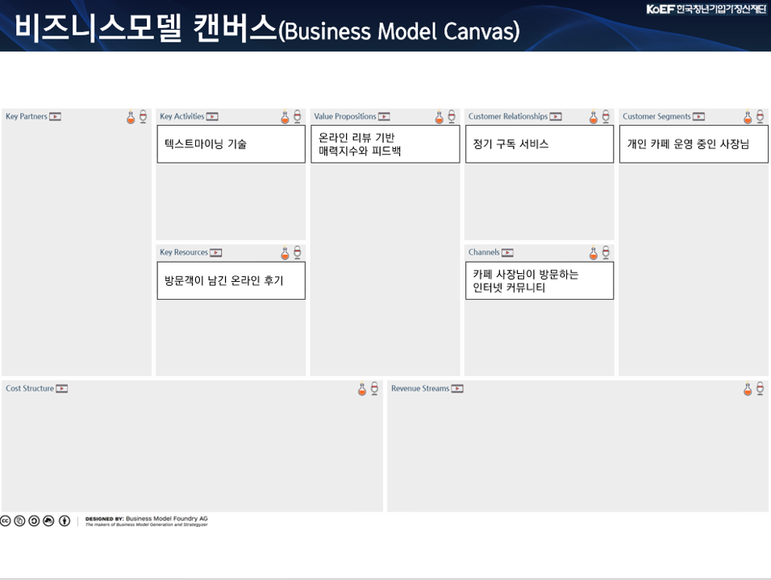 ::: {.callout-note} 위 예시의 BMC는 잘못됐다. 제일 중요한 cost, revenue 쪽이 비어있는 것은 물론, value proposition도 매력지수와 피드백이 아닌 고객에게 제공할 가치로 바꾸어야 한다. :::
저녁을 먹고나서는 인스트럭터와 1:1로 10분간 피드백 시간을 별도로 가진다.
합숙교육 2일차
2일차는 고객 인터뷰를 수행하는 방법과 모의 인터뷰 실습을 진행한다. 오전에는 고객 인터뷰 필요성과 설계, 수행 방법에 대해 배운다. 인터뷰가 귀찮은 과정은 맞지만 하지 않았을 때 겪는 어려움은 이 두 클립을 보면 알 수 있다 (1, 2).
오후에는 배운 인터뷰 내용을 실습하는 시간을 가진다. 점심 이후 1시간 동안 인터뷰 수행을 위한 비즈니스 가설 및 인터뷰 전략을 구상한다. 이후 3시간 동안 혁신단 다른 팀과 다른 혁신단 팀들과 모의 인터뷰를 진행한다.  총 10팀의 모의 인터뷰 수행건을 정리한 과제 2는 2일차 밤까지 업로드한다. 1일차와 마찬가지로 저녁 이후 인스트럭터와 피드백 시간을 가지며 인터뷰 수행한 것에 대한 조언을 듣는다.
총 10팀의 모의 인터뷰 수행건을 정리한 과제 2는 2일차 밤까지 업로드한다. 1일차와 마찬가지로 저녁 이후 인스트럭터와 피드백 시간을 가지며 인터뷰 수행한 것에 대한 조언을 듣는다.
합숙교육 3일차
3일차는 교육 없이 합숙교육으로 배운 내용을 오전에 발표했다. BMC로 사업 컨셉을 설명하고, 모의 인터뷰로 검증하고자 하는 것을 가치제안모델과 비즈니스모델 가설 페이지로 전달했다. 이후 각 인터뷰를 정리한 고객인터뷰기록과 최종 인사이트 도출 페이지로 모의 인터뷰 수행 결과를 발표했다.
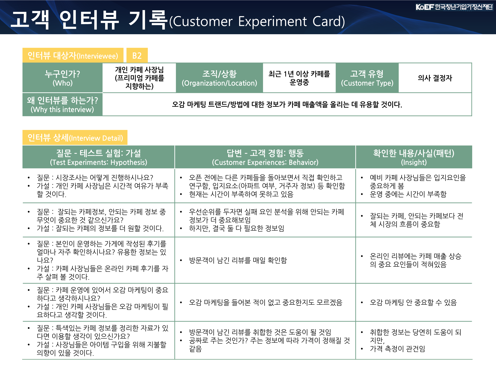
최종발표
합숙 교육이 끝나고 최종발표까지 2주간 실제 고객 인터뷰 15건을 수행한다. ")
이 인터뷰를 정리한 과제 3으로 10분 발표와 5분 피드백 시간을 가진다. 앞서 말한대로 인터뷰로 검증되지 않은 비즈니스 모델인 경우 수정 및 보완 하는 것이 당연하므로, 이 과제 3도 이 과정이 포함된다.  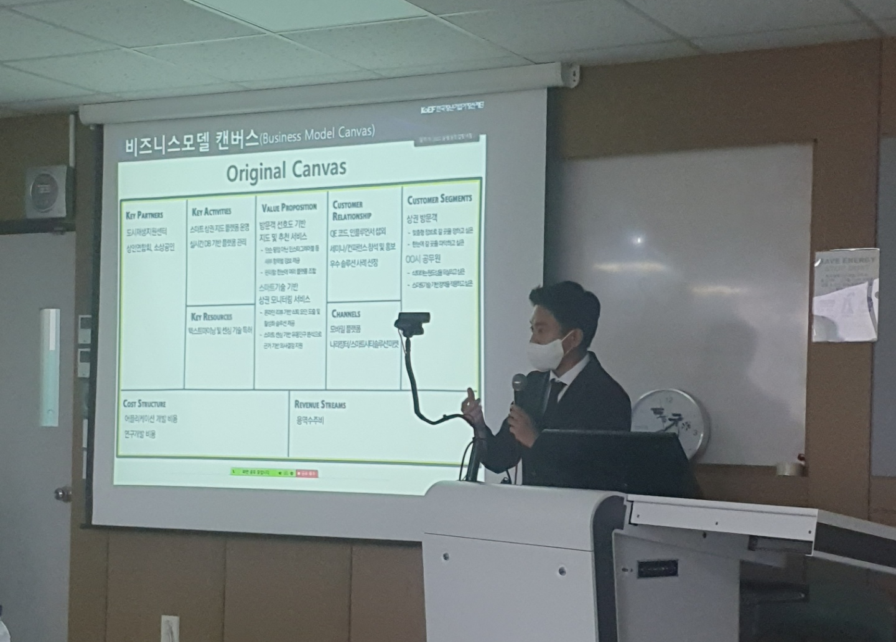
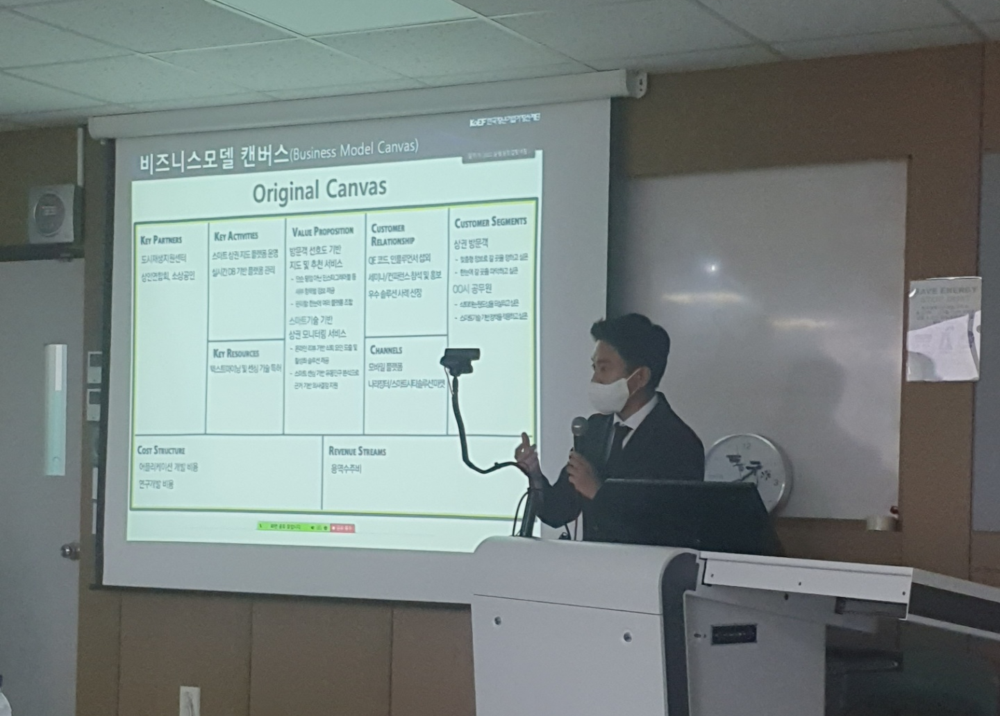
피봇 과정을 거친다면 BMC도 바뀌게 된다. 처음 BMC와 바뀐 BMC도 발표하며, 얼마나 바뀐 지를 인스트럭터 평가자가 눈여겨 본다. ")
기초교육 소결
1. 준비한 아이템으로 기초교육은 끝까지 수행하고 최종 발표에서 수정하자
우리 팀은 기초교육 첫 단추를 잘못 끼워 교육 내내 고생했다. 과제 1 발표부터 우리는 제출한 아이템의 고객인 공공공간 관리자, 공무원이 아닌 소상공인으로 첫페이지부터 소개를 했었다. 교육(인터뷰)를 수행하지도 않고 아이템을 바꾸는 경우는 지원서 합격을 위해 그럴싸한 아이템으로 지원하고 바꾸는 경우로 의심받을 수 있다고 한다. 인터뷰 이후 수정 및 보완은 아주 당연한 과정이므로, 처음 제출한 아이템이 이상하더라도 계속해서 교육을 수행하고 마지막에 바꾸기를 추천한다.
2. 준비한 아이템으로 BMC 미리 만들어오자
1시간만에 BMC를 완성하기가 정말 쉽지 않아서 미리 생각해오는게 필요하다. 아래는 만든 첫번째 BMC인데 잘못된 점이 아주 많지만 기록으로 여기 올려둔다. 
3. 모의 인터뷰는 상대에게 구체적인 페르소나를 부여하자
모의 인터뷰를 하면서 느낀건 인터뷰 상대는 우리와 같은 스타트업 창업자지 진정한 고객이 아니므로, 페르소나를 구체적으로 부여해야 한든 것이다. 고객을 구체적으로 설정하면 좋은 것과 같지, 모의 인터뷰 이전 상대 팀에게 우리 아이템에 대해 밝히지 않으면서 되었으면 하는 고객에 대해 최대한 구체적으로 말하는게 좋았다. 우리는 처음에는 일반적인 소상공인에서, 인터뷰를 수행하면서 카페 사장님, 개인 카페 사장님, 프리미엄 카페 운영하는 사장님으로 좁혀나갔고 더 유의미한 결과를 얻었다.
실전교육
실전 교육은 국내형과 해외형으로 나눠진다. 우리 팀은 해외형 실전교육을 수행했고 미국 서부로 가 3주간 교육을 받았다. 각 1주를 Core week으로 부르고 수요일마다 모여서 프로그램 경과를 발표한다. 마지막 날은 Demo day로 최종 발표를 하고 교육은 마무리 된다. 교육 과정은 여기에서 볼 수 있다.
실전교육 1주차
미국 도착 다음날 Core week 1 발표가 바로 있다. 프로그램을 등록하고 소개를 간략히 받은 다음, 팀별로 발표가 시작되고 팀 소개를 먼저 한다. 우리는 음식점 온라인 리뷰를 분석해서 고객 경험을 이해하고 다중 평가 기준 점수를 제공해서 1) 방문객에게는 맛집 추천을 2) 소상공인 음식점 주인에게는 컨설팅 서비스를 제공하려고 했다.  이후 인터뷰 수행 결과와 계획에 대해서 발표한다. 미국에서 인터뷰 기회가 현실적으로 없지만 인터뷰 결과를 발표해야 하므로, 최종 발표 이후 국내 인터뷰를 꾸준히 더 수행해야 한다. 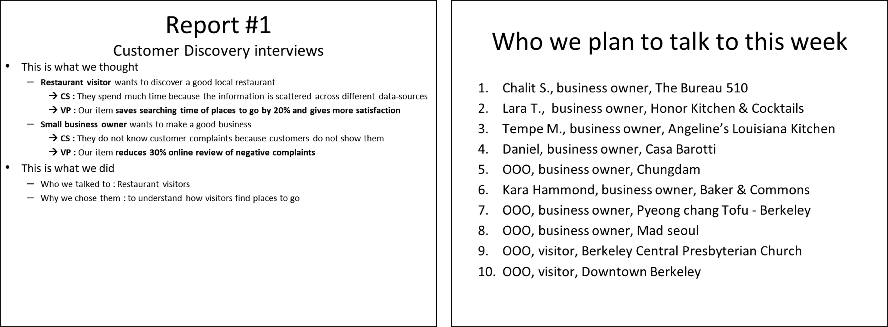 ### 실전교육 2주차 1주차 수요일부터 일주일간 인터뷰 수행 결과를 2주차 수요일에 발표한다. 첫 부분은 팀 소개와 BMC이고 수정된 것을 발표해도 괜찮다. 우리 팀은 의사결정에 도움을 주는 시스템(decision support system)으로 이름을 바꾸고, 30건이 추가되어 총 35건 인터뷰를 수행했으며 BMC에서는 1) 방문객들에게 맛집 검색 시간을 1/5로 줄여줄 것을, 2) 소상공인에게는 온라인 리뷰 기반 리포트를 제공할 것을 구분지어 발표했다. 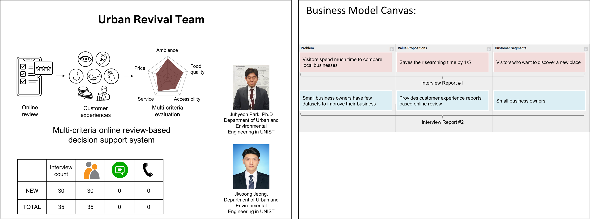 이후 인터뷰 수행 리포트는 우리가 생각했던 것(가설)과 수행 했던 것(실험), 배운 것(결과), 향후 계획(토론)을 담아 만든다. 인터뷰를 수행하기 전 이 부분에 채워야할 것을 생각하고 설계한다면 더 도움이 될 것 같다.
이후 인터뷰 수행 결과와 계획에 대해서 발표한다. 미국에서 인터뷰 기회가 현실적으로 없지만 인터뷰 결과를 발표해야 하므로, 최종 발표 이후 국내 인터뷰를 꾸준히 더 수행해야 한다. 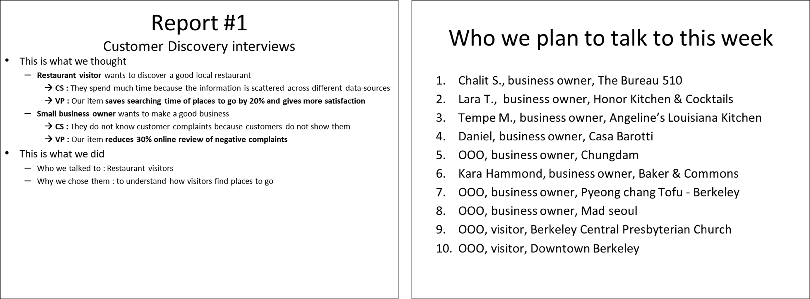 ### 실전교육 2주차 1주차 수요일부터 일주일간 인터뷰 수행 결과를 2주차 수요일에 발표한다. 첫 부분은 팀 소개와 BMC이고 수정된 것을 발표해도 괜찮다. 우리 팀은 의사결정에 도움을 주는 시스템(decision support system)으로 이름을 바꾸고, 30건이 추가되어 총 35건 인터뷰를 수행했으며 BMC에서는 1) 방문객들에게 맛집 검색 시간을 1/5로 줄여줄 것을, 2) 소상공인에게는 온라인 리뷰 기반 리포트를 제공할 것을 구분지어 발표했다. 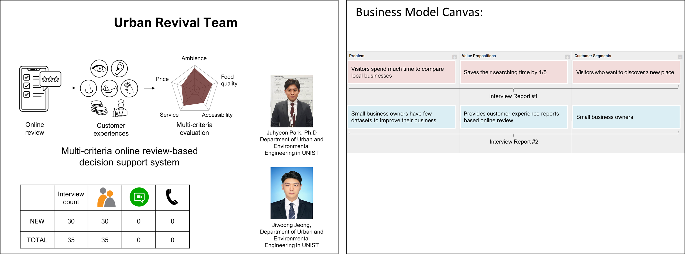 이후 인터뷰 수행 리포트는 우리가 생각했던 것(가설)과 수행 했던 것(실험), 배운 것(결과), 향후 계획(토론)을 담아 만든다. 인터뷰를 수행하기 전 이 부분에 채워야할 것을 생각하고 설계한다면 더 도움이 될 것 같다.  발표 마지막엔 BMC를 보여준다. 업데이트된 고객과 고객 문제, 가치 제안을 포함해서 1주차에서 배운 Channels과 Revenue Streams을 추가한다. 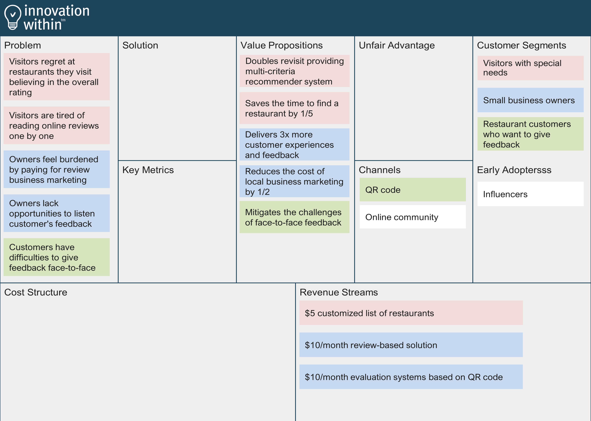
발표 마지막엔 BMC를 보여준다. 업데이트된 고객과 고객 문제, 가치 제안을 포함해서 1주차에서 배운 Channels과 Revenue Streams을 추가한다. 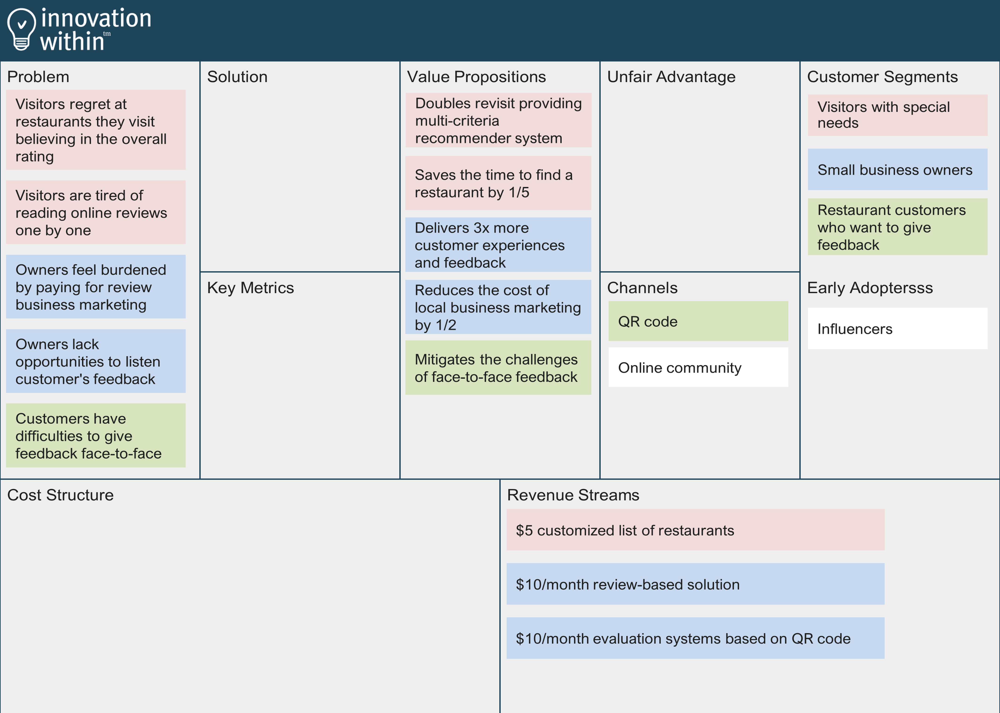
실전교육 3주차
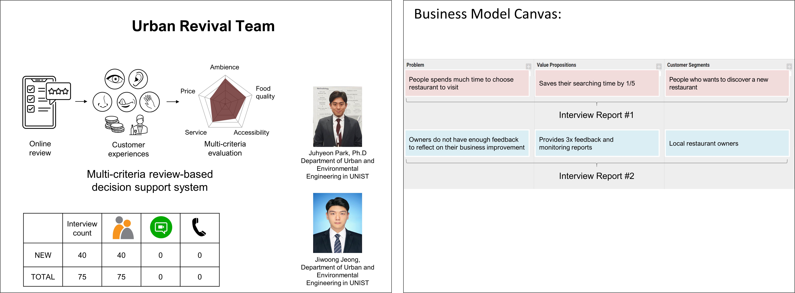
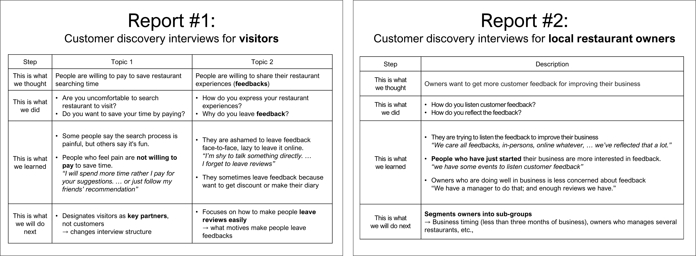
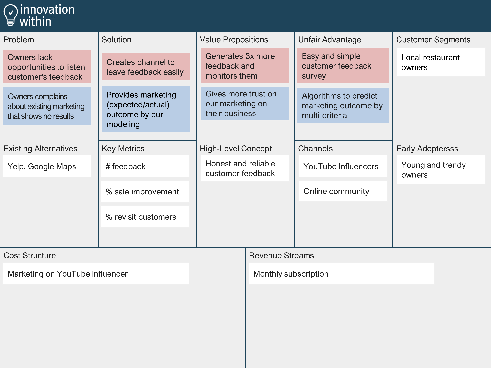
데모데이
공식적으로 마지막 날인 데모데이는 다른 교육 없이 프로그램을 성공적으로 수행한 것을 축하하는 날이다. 10여개 팀이 선정되어 10분 내외로 프로그램 수행한 것을 발표하고 인스트럭터와 외부 평가의원이 5분간 의견을 준다. ")
해외 인터뷰 팁
해외 실전교육은 정량평가 기준인 75개 인터뷰 개수를 채웠는 지가 중요하다. 수월한 인터뷰 수행을 위한 팁은 다음과 같다.
1. 출국 전 인터뷰를 잡아두자
우리 팀은 미국 출국 전부터 인터뷰를 잡기 위해 노력했다. 영어가 출중하다면 관계 없지만 보다 수월한 인터뷰 수행을 위해, 그리고 미국에 사는 한국인 이야기도 들어봐야 한다고 생각했다.
다른 방법보다도 링크드인으로 동문들에게 연락하는 방법이 가장 유효했다. UNIST에서 학위를 받은 사람 중 샌프란시스코에서 포스닥을 하거나 직장을 잡으신 분에게 일촌 신청과 메세지를 보냈다. 간략한 내 소개와 메세지를 보내는 이유인 인터뷰 요청, 그리고 간략한 아이템 소개를 담았다.  대부분이 긍정적인 반응과 함께 인터뷰에 응해주셨다. 샌프란시스코 인근 대학인 UCB와 스탠포드에서 연구하는 포스닥 분들을 만날 수 있었고 감사하게도 앞서 말한 시간보다 더 길게 인터뷰를 진행하며 아이템에 대한 고민을 나눌 수 있었다.
대부분이 긍정적인 반응과 함께 인터뷰에 응해주셨다. 샌프란시스코 인근 대학인 UCB와 스탠포드에서 연구하는 포스닥 분들을 만날 수 있었고 감사하게도 앞서 말한 시간보다 더 길게 인터뷰를 진행하며 아이템에 대한 고민을 나눌 수 있었다.  #### 2. 인터뷰 전략을 세우자 ##### 일반인 대상 많은 팀이 일반인을 대상으로 고객 탐색 인터뷰를 진행한다. 미국 일반인들도 인터뷰를 구하는 우리의 첫인상을 중요하게 생각할 것이다. 우리는 셔츠나 구두 등 격식을 차리는 복장에 나눠준 명찰을 매고 매 인터뷰에 임했다. 처음 말을 걸 땐, 오늘 하루 어때? 날씨 좋지? 같은 미국식으로 접근하는 방법도 있지만 나의 경우, 정석적으로 명찰을 보여주며, UCB에서 지원하는 창업프로그램에 참여하는 학생인데 고객 탐색 인터뷰를 위해 5분 시간을 내줄 수 있는 지를 묻는 것이 더 반응이 좋았다.
#### 2. 인터뷰 전략을 세우자 ##### 일반인 대상 많은 팀이 일반인을 대상으로 고객 탐색 인터뷰를 진행한다. 미국 일반인들도 인터뷰를 구하는 우리의 첫인상을 중요하게 생각할 것이다. 우리는 셔츠나 구두 등 격식을 차리는 복장에 나눠준 명찰을 매고 매 인터뷰에 임했다. 처음 말을 걸 땐, 오늘 하루 어때? 날씨 좋지? 같은 미국식으로 접근하는 방법도 있지만 나의 경우, 정석적으로 명찰을 보여주며, UCB에서 지원하는 창업프로그램에 참여하는 학생인데 고객 탐색 인터뷰를 위해 5분 시간을 내줄 수 있는 지를 묻는 것이 더 반응이 좋았다. ")
소상공인 대상
우리 팀의 다른 고객은 음식점을 운영하는 소상공인이었다. 무턱대고 미국인이 운영하는 음식점에 찾아가 인터뷰를 구하기 힘들다고 판단한 우리는 한인 음식점을 집중적으로 공략했다. 먼저 샌프란시스코 다운타운과 인근 지역 한식 음식점을 목록화하고 최대한 밥을 그곳에서 사먹고 나오면서 명찰을 드리며 인터뷰를 요청했다. 특히, 한 사장님과 좋은 관계를 유지하면 다른 분들도 소개해주시는 경우도 있었다. 
3. 설문조사가 아닌 대화를
처음 인터뷰는 써놓은 대본을 읽고 예/아니오를 체크하고 넘어가는 경우가 많았다. 상대방 눈을 바라보지 못하고 대화가 아닌 물어보고 답을 적고 하는 것은 인터뷰가 아니라고 한다.  인터뷰에서 물어볼 내용이 많아도 한 질문에 대해 관심이 있다면 그 근본 원인을 찾기 위해 5-Why 기법으로 다른 질문을 과감히 버리고 집중했다. 녹음 기능을 켜고 최대한 눈을 마주보고 대화를 하려고 했고, 이 경우에 더 많은 시사점을 얻을 수 있었다.
인터뷰에서 물어볼 내용이 많아도 한 질문에 대해 관심이 있다면 그 근본 원인을 찾기 위해 5-Why 기법으로 다른 질문을 과감히 버리고 집중했다. 녹음 기능을 켜고 최대한 눈을 마주보고 대화를 하려고 했고, 이 경우에 더 많은 시사점을 얻을 수 있었다.